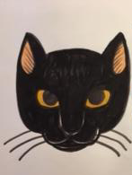
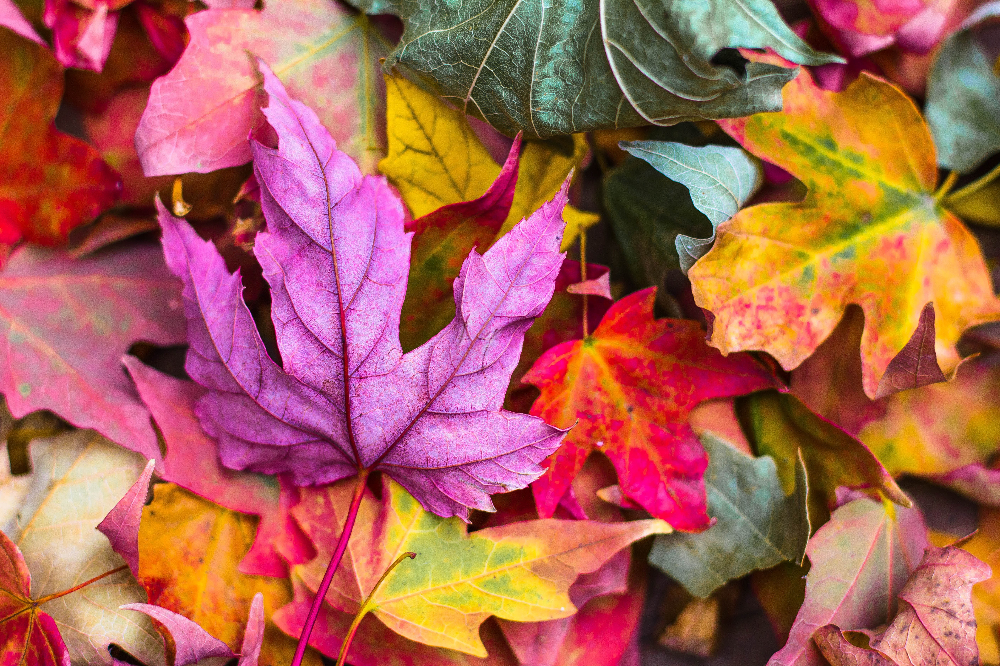
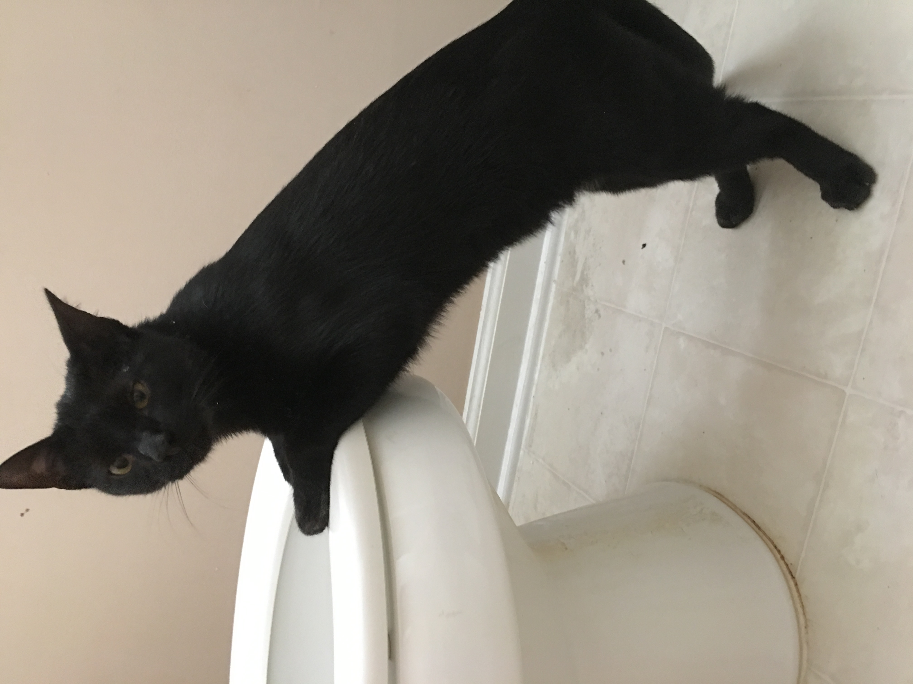
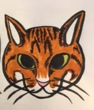

S. Farrales
Student
"Though she be tiny, she be mighty!"
- Shakespeare, A Midsummer Night's DreamThis is only a rough draft for the upcoming portfolio project. This is my attempt at a decent gallery with colors that match my resume.

Battlefield
Photograph taken by Jeremy Thomas
This image reminds of the foliage along the paths in the battlefields from my hometown.

Galaxy
Photograph taken by Jeremy Thomas.
Space can be wibbly-wobbly timey-wimey. Do you see a police box?

Maddie
Photograph taken by the author of this website.
An adorable picture of my kitty, Maddie, being too cute for words.

Sully
Photograph taken by the author of this website.
An image of my silly kitten, Sully, gazing into the swirling pool of the toilet.

Artistic Maddie
An artistic rendition of Maddie by my husband, R.Farrales.
My husband's idea of what our kitty, Maddie, looks like if she were more orange.
©2019 - Farrales